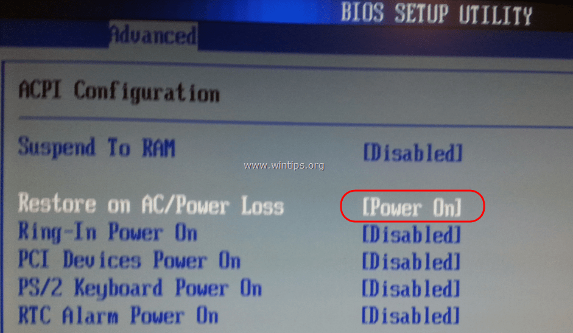

Claymore's Dual Ethereum AMD+NVIDIA GPU Miner
Самый быстрый Ethereum/Ethash майнер с самой низкой комиссией
Автозапуск Claymore
Как создать пакетный файл для автоматического запуска майнинга при запуске Windows или после сбоя системы и перезагрузки. (Мы используем MSI Afterburner.)
Пожалуйста, не пытайтесь выполнить это руководство до тех пор, пока вы не доведите до идеала андервольтинг / разгон.
Настройки должны быть стабильными и способными запускаться без каких-либо проблем.
Мы сохранили свои настройки в MSI Afterburner. Установили флажок, который запускает Afterburner при запуске Windows и минимизируют его в системном трее. Мы также проверили, чтобы применялись настройки разгона при запуске.
Шаг 1.
Хорошо, прежде всего вам нужно настроить вход в Windows, чтобы вам не приходилось вводить пароль, прежде чем вы сможете увидеть рабочий стол.
Просто зайдите в парамтеры и аккаунты.
Создайте новую учетную запись или измените свою учетную запись, чтобы не иметь пароля (оставьте это поле пустым). Перейдите вниз, чтобы войти в параметры, выберите «никогда» в поле, которое спрашивает, когда Windows должен требовать ввода пароля. Прокрутите вниз, и вы увидите соответствующие настройки. Нажмите на них. Прокрутите вниз там, где написано «показать фоновый рисунок Windows ....», отключите его. Сделайте все это, чтобы пропустить экран входа при загрузке или перезагрузке Windows. Это то, что нам нужно.
Пакетный файл не будет выполнен сам по себе, если вы этого не сделаете. Он будет ждать, пока вы войдете в систему с вашим паролем, а затем запустит bat файл майнинга.
Шаг 2.

Убедитесь, что ваша материнская плата настроена на автоматическую загрузку. В основном это настройка "Restore on AC/Power Loss" , которая позволяет этому случиться.
Шаг 3.
В файле readme в опции -r, если вы включите -r 1, то майнер выполнит файл reboot.bat (перезагрузку). Он также включает в себя код shutdown / r / t 5 / f.
Откройте новый блокнот и вставьте этот код. Сохраните его как reboot.bat.
Убедитесь, что вы не сохраняете его как текстовый файл, убедитесь, что это исполняемый файл .bat.
Теперь откройте новый файл блокнота и введите следующую команду
Пример файла автозагрузки
echo off start / d: «Вот куда уходит ваш адрес start.bat». Пример start.bat : echo off
Пример файла автозагрузки
start /d "C:\Users\Desktop\my files\Claymore's Dual Ethereum AMD+NVIDIA GPU Miner v15.0 - Windows" 3_Ethereum-ethermine.bat
Сохраните файл так, как вы хотите его назвать. (Убедитесь, что вы используете кавычки, до C: и после имени папки, в которой находится ваш пакетный файл)
Шаг 4.
Теперь щелкните правой кнопкой мыши по этому файлу и создайте ярлык.
Щелкните правой кнопкой мыши по этому ярлыку и выберите вырезать.
Перейдите в окно пуск и в разделе Служебные – Windows выберите пункт Выполнить.
Когда появится окно «Выполнить», введите shell:startup
Теперь вы должны оказаться в папке автозагрузки, где вы можете добавить пакетные файлы.
Щелкните правой кнопкой мыши и выберите «Вставить».
Таким образом, теоретически, когда ваш майнер аварийно завершает работу и выполняет reboot.bat, ваша система перезагружается, при запуске системы она запускает файл bat, который вы только что создали.
Если вы используете MSI Afterburner, ваши настройки уже будут загружены, и вы снова будете заниматься майнингом.
Файл reboot.bat предназначен для перезагрузки фермы. Но Вы не должны делать автоматический перезапуск в случае возникновения проблем с майнингом.
Перезапуск не устранит ни одной из основных причин сбоев.
В каких случаях использовать Reboot.bat
- если со временем скорость хэширования падает примерно на 1-1,5 m/hs на карту
- нечастые / разовые сбои видеокарты
- ваши фермы установлены удаленно и к ним затруднен доступ
Как использовать Reboot.bat
Для того, что бы запустить перезагрузку, нужно отредактировать .bat файл с нужной монетой и допусать в него ключ -r 1
Команда -r 1 закрывает майнер и запускает файл «reboot.bat» («reboot.bash» или «reboot.sh» для версии Linux) в каталоге майнера (если файл существует, скачать каталог с этим файлом можно ниже), если произошел сбой какого-либо графического процессора.
Пример с ключом -r 1
Не забудьте добавить timeout в самое начало батника, что бы он запустился не сразу, а как только система будет готова. Тем самым MSI Afterburner успеет запустить разгон и управление вентиляторами, прежде, чем начнется майннг
timeout 120 EthDcrMiner64.exe -epool eth-eu2.nanopool.org:9999 -ewal 0x1a0e2c4cd699cee12672adc223fdb30b93253eba -eworker rig1 -epsw x -mode 1 -r 1 -dbg -1 -mport 0 -etha 0 -retrydelay 3 -ftime 45 -tt 70 -ttli 79 -tstop 82 -fanmin 30 pause
Таким образом, батник с нужной Вам монетой выозовет файл «reboot.bat», если что-то пойдет не так с майнингом. Вы можете создать сами файл «reboot.bat» и выполнить некоторые действия, например, перезагрузить систему, если вы поместите туда следующую строку: «shutdown / r / t 5 / f».
Пример
Теперь посмотрите видеоурок.
Надеемся, что это решит Вашу проблему.
Проект Claymore представляет самые последние версии программного обеспечения (исправляет все ошибки и баги предыдущих версий)! Поэтому если у Вас старая версия, мы настоятельно советуем скачать последнюю версию Claymore's по ссылкам ниже, так как с каждым выходом новой версии добыча Эфира становится выгоднее!
Ресурсы для разработчиков
- What is Ether? Read our FAQ
- Browse our source code on GitHub
- Read the documentation or wiki
- Learn Solidity
- See the latest data and network stats
- Download our logo assets
- Want to write about Ethereum? Press inquiries
- switch to the English language.